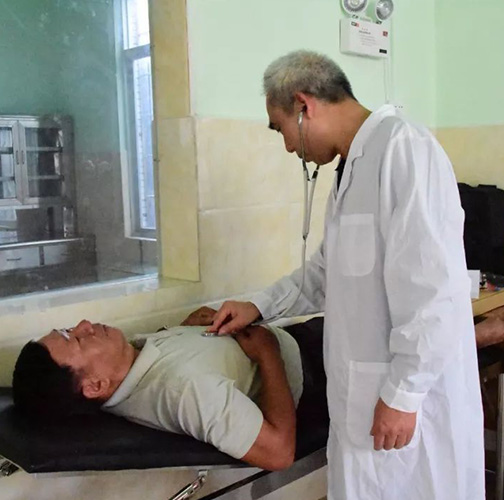
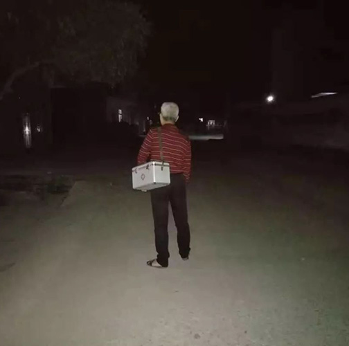
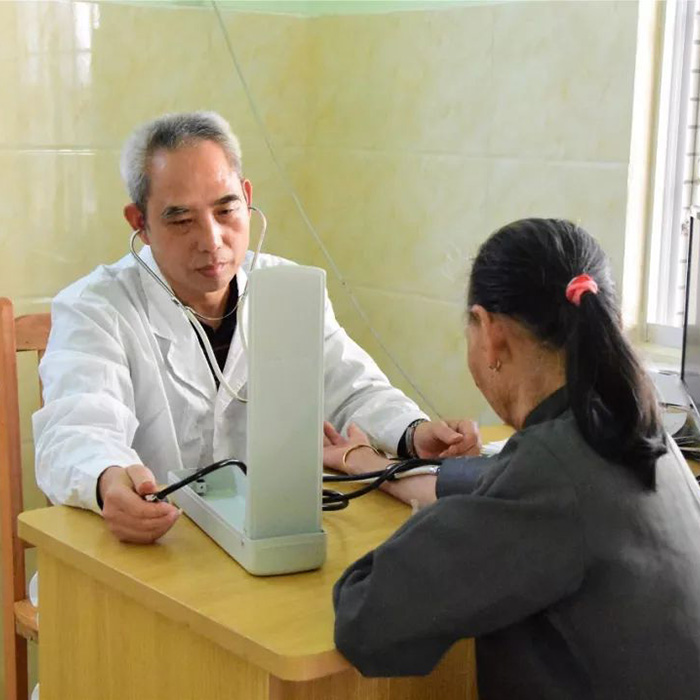

In the backward and unknown villages, everyone looks forward to the outside world, often
During the past ten years, we worked hard to improve the current situation, endured hardships and endured hardships.
Difficulties, never forget the beginning, always consistent.
Wang Wuhui was deeply influenced by his uncle who was also a doctor. He loved medicine and studied medicine with his uncle.After Maoming's further study, he went back to the countryside. Doctor's profession is a "fragrant baboon" wherever it is. Wang Wuhui hesitated to go to the city for employment, but when he saw the poor villagers'difficulty in seeing a doctor, he couldn't bear it, so he stayed in the village.
Wang Wuhui is very busy every day, less than 80 square meters of the clinic, from the doctor, dispensing, injection are operated by him alone. With the idea of "doctor's parents'heart", he listened patiently to the patient's state of illness. Every patient should be observed and cared for meticulously in the work, and medication should be taken cautiously. Whether it was cold or hot, during the day or at night, he did his duty, often tossing and turning all night without sleeping. Sometimes when a patient comes to the door just after he starts his job at home, he will put down his chopsticks to see the doctor first. Even at the beginning of the new year, he has not asked for leave, let alone the usual weekend.
  One day in December 2017, the weather was very cold. There was a villager named Zhang Zilan in Tianxingpo Village. It was two o'clock that night. She suddenly felt stomachache. She wanted to see Dr. Wang Wuhui, but thought th at he had been busy all day and could not disturb his rest. But as time went by, the stomachache became worse and worse, so she picked up the phone and called Dr. Wang. The telephone was swiftly put through. Doctor Wang got to know the situation. He got up immediately, took his medicine box with him, bicycled to Zhang Zilan's house in spite of the cold, and went to see a doctor, dispense medicine, give an injection for her, and told her to pay attention to it. Wang Wuhui did not rest all night, and the next day he still treated the villagers as usual. Wang Wuhui is just like this, conscientious and hardworking for the villagers.In order to serve the people better, Wang Wuhui insists on learning professional knowledge every day, constantly learning new knowledge, accumulating experience from all sides, training new technology, and doing his best to serve the villagers. All along, he has maintained a good medical ethics, rigorous working attitude, constantly improve his medical skills, work hard and complain, to encourage patients with a smile.
 As a village doctor, Wang Wuhui devoted himself to the rural medical and health services with the greatest enthusiasm. He did not fear the hardship of rural conditions, devoted his efforts silently, dedicated his youth, and guarded the health of Tianxingpo villagers.Wang Wuhui: Leave the most beautiful youth to the countryside


Looking for the Most Beautiful Country Doctor
Zhu Derong, a village doctor in Yancheng, has been a doctor for 35 years to protect the health of his neighbours.

There are more than 3,000 people in the ancient village. Doctor Chen is the only one to see a doctor.

Angels in White Clothes in the Deep Mountains of Guizhou Province


Xiao Jiulin: The Best Height Deduces the Strongest Persistence
Xiao Jiulin said that nowadays the traffic is more and more developed, and he has also driven an electric car. In the new era, the confidence to do a good job of village doctors and guard the health of villagers is naturally growing.
A touching moment
- Xiao Jiulin has been insisting on prescribing essential drugs, parity drugs and moderate medicines in his daily practice, trying to alleviate villagers'burden of seeing a doctor. Medical fees owed on credit to some patients are never urged. Xiao Chunlian, a poor household, had just come to see a doctor because of a cold and fever. She told me that Xiao Jiulin was accustomed to seeing a doctor because he prescribed a moderate amount of medicine. When he was in a tight situation, the medical fee could also be credited.
- Now that you have made a promise and chosen to go to the doctor, you can't give up easily. Xiao Jiulin is convinced that man will conquer nature by more means than difficulties. Faced with a series of difficulties and beatings, he is always not discouraged, not flinched, the more frustrated the more courageous. On rainy nights, when it's inconvenient to go out, let his wife accompany him, or let her carry her back to the door; because of the slow walking speed, Xiao Jiulin learned to ride tricycles and electric bicycles instead; because of his short stature, he tailored himself in the bathroom and made some suitable bench equipment.
- In order to improve the medical technology as soon as possible, Xiao Jiulin saw doctors during the day, read books at night, read a large number of medical books, at the same time, through network consultation, consult experts modestly, persevere in research, Xiao Jiulin's medical skills gradually improved, and finally won the recognition and praise of villagers, and has its own unique achievements in pediatrics. And expertise. At any time with the advancement of medical and health informationization, he has also learned to operate and use computer office software to carry out residents'health records information entry. Nowadays, Xiao Jiulin does not fall behind in the work that normal people can do in the field of village medicine.
- Xiao Jiulin has been insisting on prescribing essential drugs, parity drugs and moderate medicines in his daily practice, trying to alleviate villagers'burden of seeing a doctor. Medical fees owed on credit to some patients are never urged. Xiao Chunlian, a poor household, had just come to see a doctor because of a cold and fever. She told me that Xiao Jiulin was accustomed to seeing a doctor because he prescribed a moderate amount of medicine. When he was in a tight situation, the medical fee could also be credited.
- Now that you have made a promise and chosen to go to the doctor, you can't give up easily. Xiao Jiulin is convinced that man will conquer nature by more means than difficulties. Faced with a series of difficulties and beatings, he is always not discouraged, not flinched, the more frustrated the more courageous. On rainy nights, when it's inconvenient to go out, let his wife accompany him, or let her carry her back to the door; because of the slow walking speed, Xiao Jiulin learned to ride tricycles and electric bicycles instead; because of his short stature, he tailored himself in the bathroom and made some suitable bench equipment.
- In order to improve the medical technology as soon as possible, Xiao Jiulin saw doctors during the day, read books at night, read a large number of medical books, at the same time, through network consultation, consult experts modestly, persevere in research, Xiao Jiulin's medical skills gradually improved, and finally won the recognition and praise of villagers, and has its own unique achievements in pediatrics. And expertise. At any time with the advancement of medical and health informationization, he has also learned to operate and use computer office software to carry out residents'health records information entry. Nowadays, Xiao Jiulin does not fall behind in the work that normal people can do in the field of village medicine.
- Xiao Jiulin has been insisting on prescribing essential drugs, parity drugs and moderate medicines in his daily practice, trying to alleviate villagers'burden of seeing a doctor. Medical fees owed on credit to some patients are never urged. Xiao Chunlian, a poor household, had just come to see a doctor because of a cold and fever. She told me that Xiao Jiulin was accustomed to seeing a doctor because he prescribed a moderate amount of medicine. When he was in a tight situation, the medical fee could also be credited.
- Now that you have made a promise and chosen to go to the doctor, you can't give up easily. Xiao Jiulin is convinced that man will conquer nature by more means than difficulties. Faced with a series of difficulties and beatings, he is always not discouraged, not flinched, the more frustrated the more courageous. On rainy nights, when it's inconvenient to go out, let his wife accompany him, or let her carry her back to the door; because of the slow walking speed, Xiao Jiulin learned to ride tricycles and electric bicycles instead; because of his short stature, he tailored himself in the bathroom and made some suitable bench equipment.
- In order to improve the medical technology as soon as possible, Xiao Jiulin saw doctors during the day, read books at night, read a large number of medical books, at the same time, through network consultation, consult experts modestly, persevere in research, Xiao Jiulin's medical skills gradually improved, and finally won the recognition and praise of villagers, and has its own unique achievements in pediatrics. And expertise. At any time with the advancement of medical and health informationization, he has also learned to operate and use computer office software to carry out residents'health records information entry. Nowadays, Xiao Jiulin does not fall behind in the work that normal people can do in the field of village medicine.
Team：杨鸿 陈深 张燕琼